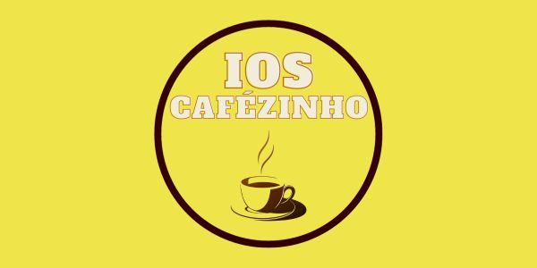

A sua pausa mais reconfortante do dia só pode ser com um bom café. Venha conhecer a cafeteria IOS e seus produtos. Garantimos que aqui prezamos pelo cliente, oferecendo um clima aconchegante que somente uma pausa para o café poderia ter.
Sobre nós
Nosso produto

A cafeteria IOS já atua no mercado a 25 anos, garantindo um serviço de qualidade aos nossos clientes. Proporcionamos um ambiente aconchegante e acolhedor que transmite um cheirinho de café. Atendemos, principalmente estudantes do campus, mas também estamos abertos para proporcionar experiencias inesquecíveis a qualquer um que busque o nosso espaço para relaxar e apreciar um delicioso café.
Atuamos com uma diversidade incrível de produtos que atendem, desde um entusiasta do café até uma pessoa que busca simplesmente relaxar. Servimos o café em suas variadas opções, além de oferecermos acompanhamento para este momento especial. Também Servimos lanches, salgados e doces, com a melhor qualidade do mercado.
Confira nossos principais produtos!

Café tradicional
R$ 10,00
Sendo o carro chefe da casa, tratamos o café como prioridade, neste caso, oferecemos o tão familiar café tradicional. Preto ou com leite, é um excelente pedido para começar o seu dia.

Salgado sortidos
R$ 30,00 kg
Um acompanhamento salgado para aqueles que gostam. Oferecemos, em nossa cafeteria, uma diversidade de salgados sortidos, todos prontos no dia e a sua disposição, basta pedir um.

Café gelado
R$ 12,00
Refrescante e estimulante, nosso café gelado é uma ótima opção para dias quentes e puxados, venha experimentar.

Bolo de chocolate
R$ 6,99 fatia
Para os amantes de chocolate, oferecemos o tão amado bolo de chocolate. Um ótimo acompanhamento doce ou uma excelente sobremesa cremosa e saborosa.

Macarrons
R$ 2,99 un.
Pequeno, mas irresistível. Venha em nossa cafeteria experimentar nossos macarons, prato francês, sofisticado e delicioso.

Cupcake
R$ 3,99 un.
Simples e incríveis, experimente a doçura e a leveza de nossos cupcakes saborosos. Pode ser como acompanhante ou sobremesa, seu sabor junto ao nosso clima tornara o seu dia perfeito.
Venha nos visitar!

A cafeteria IOS agradeço muito a sua visitação em nosso site, prezamos muito por você e esperamos um dia recebe-lo em nosso estabelecimento. Ficamos na Av. Manoel Elias, 2001 - Passo das Pedras, Porto Alegre - RS. Venha nos visitar e fazer parte da nossa história, esperamos por você!
Fique por dentro
Se quiser ficar por dentro de nossas promoções e eventos, por favor faça o cadastro ao lado, para notificarmos em seu e-mail novas atualizações sobre os nossos produtos.